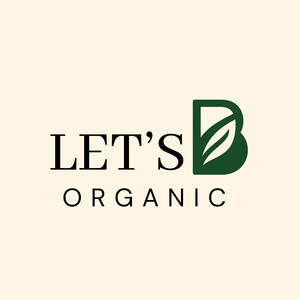

Trade Mark Journal No.2026/005 30 January 2026
UK00004326365 19 January 2026 (5)

Dietary and nutritional supplements made from organically produced materials
- Class 5
- Antioxidants; Anti-oxidant food supplements; Anti-oxidant supplements; Nutritional supplements; Chlorella dietary supplements; Anti-oxidants obtained from herbal sources; Acai powder dietary supplements; Mineral nutritional supplements; Health-aid foods supplements containing ginseng; Anti-oxidants derived from honey; Vitamin supplements; Vitamin and mineral food supplements; Flaxseed dietary supplements; Dietary and nutritional supplements; Antioxidant pills; Probiotic supplements; Protein supplements; Multivitamins; Food supplements; Dietary supplements consisting of vitamins; Anti-oxidants for dietary use; Herbal supplements; Wheat dietary supplements; Protein dietary supplements; Vitamin and mineral supplements; Nutraceuticals for use as a dietary supplement; Dietetic foods for use in clinical nutrition; Liquid nutritional supplements; Vitamin supplements for animals; Anti-oxidants for medicinal use; Mineral dietary supplements for humans; Prebiotic supplements; Dietary supplements for humans; Whey protein dietary supplements; Dietary food supplements; Baby foods; Nutritional supplement energy bars; Soy protein dietary supplements; Flaxseed oil dietary supplements; Vitamin preparations in the nature of food supplements; Vitamin and mineral supplements for pets; Vitamins and vitamin preparations; Dietary food supplements used for modified fasting; Health food supplements made principally of vitamins; Food supplements for sportsmen; Homeopathic supplements; Anti-oxidants comprising enzymes; Health-aid foods supplement containing red ginseng; Protein powder dietary supplements; Mineral dietary supplements; Dietary supplements; Protein supplements for animals; Yeast dietary supplements; Dietary supplements promoting fitness and endurance; Lecithin dietary supplements; Wheat germ dietary supplements; Diet capsules; Linseed dietary supplements; Energy gels (dietary supplements); Enzyme dietary supplements; Propolis dietary supplements; Food supplements consisting of amino acids; Mineral dietary supplements for animals; Colostrum dietary supplements; Nutritional supplements consisting of fungal extracts.
Marwan El Mallem Dahbi
Aaesha-Sofia Balogun